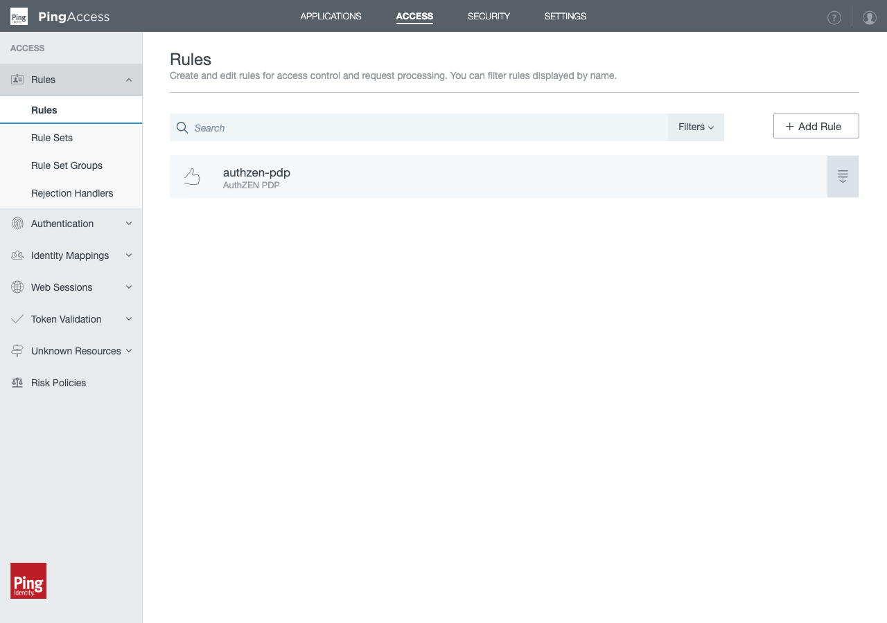
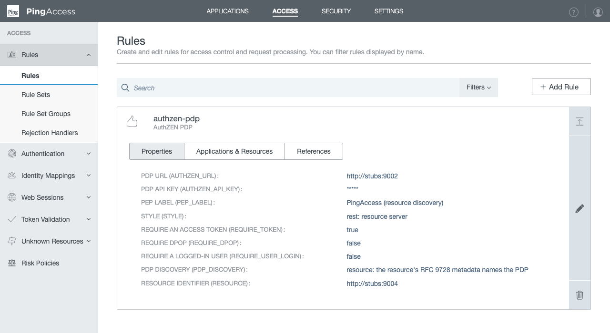
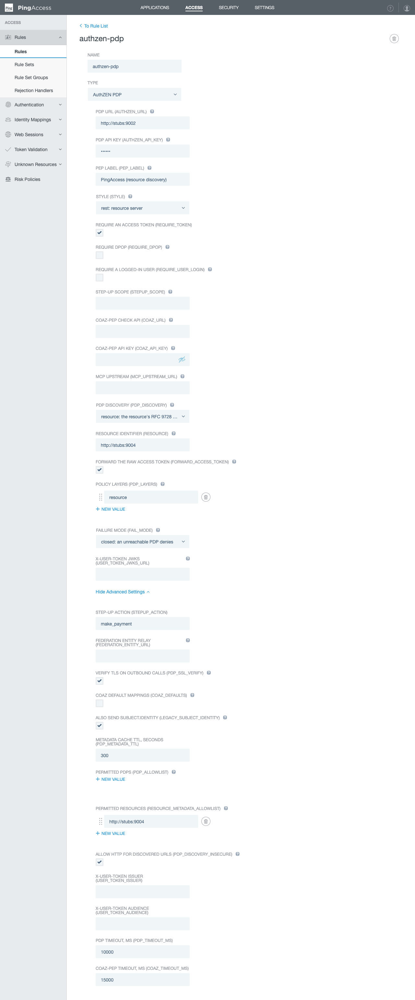
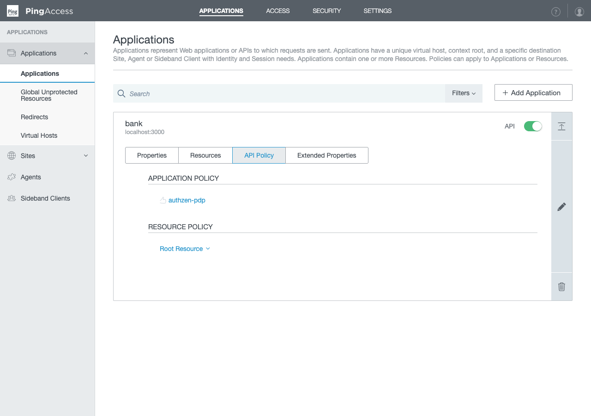

The PingAccess rule
AuthZEN PDP is an Add-on SDK rule: the PingAccess counterpart of the Kong plugin, sending the PDP the same AuthZEN request and rendering the same challenges, so a client cannot tell from a deny which gateway said no. Token and actor-claim extraction, RFC 9470 challenges, REST and MCP mapping, RFC 9728 and AuthZEN discovery and policy layers are native Java; DPoP verification and per-tool-call COAZ authorisation are delegated to coaz-pep, as Kong does. It is configured in the PingAccess console or through the admin API, spelled the same as every other PEP here.
Not to be confused with PingAccess's built-in PingAuthorize Policy Decision Access Control and PingAuthorize Access Control rules. Those speak PingAuthorize's own APIs to PingAuthorize alone. This one speaks AuthZEN 1.0 to any conformant PDP, discovers which PDP decides for a resource, and returns resolvable challenges.
Build and install
The Add-on SDK is on no public Maven repository. Take it from a PingAccess install or, without one, from the public Docker image, which needs no licence to pull.
cd gateways/pingaccess/authzen-pdp
id=$(docker create pingidentity/pingaccess:9.1.0-latest)
mkdir -p .pa/lib && docker cp "$id:/opt/server/lib/pingaccess-sdk-9.1.0.1.jar" .pa/lib/ && docker rm "$id"
mvn verify # tests, the coverage ratchet, the jar
# or, against an install:
mvn -Dpa.server.root=/opt/pingaccess -Dpa.sdk.version=9.1.0.1 verifyThe jar is target/authzen-pdp-pingaccess-<version>.jar; PingAccess supplies Jackson, jose4j and slf4j, so nothing is bundled. Built for Java 17 bytecode, it loads on PingAccess 8.x and 9.x. Copy it to <PA_HOME>/deploy/ and restart; the DevOps image's local server profile is /opt/in/instance/deploy/. The rule then appears as AuthZEN PDP (class com.idpartners.pa.authzen.AuthZenRule) for Site and Agent destinations.
The rule in the console
The console draws one form from the rule's descriptor: each field with a widget, a label, a default, a help note, and whether it is required or behind Show Advanced Settings. The same descriptor is what the admin API serves at GET /pa-admin-api/v3/rules/descriptors/AuthZenPdpRule. Captured from the demo's PingAccess (docker compose --profile pingaccess) as configured by its start-up hook.

Rules page listing the authzen-pdp rule of type AuthZEN PDP" loading="lazy">



Every field
Names are as saved under configuration; the console shows a label with the name in brackets. advanced marks a field behind Show Advanced Settings.
The PDP
| Field | Widget · default | Meaning |
|---|---|---|
authzen_url required | text | The static PDP: always the fallback, always permitted. |
authzen_api_key | concealed | Bearer key for authzen_url. A discovered PDP never receives it. Stored encrypted; the API returns {"encryptedValue": "OBF:JWE:…"}. |
pdp_timeout_ms advanced | text · 10000 | Timeout on PDP calls. |
pdp_ssl_verify advanced | checkbox · true | TLS verification on every outbound call. Off is process-wide for JDK clients built afterwards: dev only. |
The route
| Field | Widget · default | Meaning |
|---|---|---|
pep_label | text · pingaccess-pep | Names this PEP in challenges and the X-PDP-PEP header. |
style | select · rest | rest (resource server) or mcp (MCP edge). |
require_token | checkbox · true | Deny without a readable access token. |
require_dpop | checkbox · false | Delegate the RFC 9449 sender-constraint check to coaz-pep; needs coaz_url, and is refused at configuration time without it. |
require_user_login | checkbox · false | Deny without a valid X-User-Token, with a login challenge. |
stepup_scope | text | Scope named in a step-up challenge when the PDP's advice names none. |
resource | text | The protected resource's identifier (RFC 8707), the key discovery starts from. |
forward_access_token | checkbox · false | Send the raw token to the PDP as context.access_token. |
coaz-pep
| Field | Widget · default | Meaning |
|---|---|---|
coaz_url | text | coaz-pep's HTTP check API. |
coaz_api_key | concealed | Its CHECK_API_TOKEN. |
mcp_upstream_url | text | Where tools/list lives; with coaz_url, enables per-tool-call COAZ on mcp routes. |
federation_entity_url | text | Relay the resource's two well-known documents from coaz-pep at this URL. |
coaz_defaults advanced | checkbox · false | Apply the COAZ-MCP binding's default mappings to undeclared tools. |
coaz_timeout_ms advanced | text · 15000 | Timeout on coaz-pep calls. |
Discovery
| Field | Widget · default | Meaning |
|---|---|---|
pdp_discovery | select · off | off, authzen or resource. No federation mode; the same reason as Kong, and the same remedy: behind coaz-pep. |
pdp_metadata_ttl advanced | text · 300 | Cache TTL, seconds, for resource and PDP metadata. |
pdp_allowlist | list · any https | Permitted discovered-PDP prefixes; authzen_url is always permitted. |
resource_metadata_allowlist | list · any | Permitted resource prefixes for metadata fetches. |
pdp_discovery_insecure advanced | checkbox · false | Allow http for discovered URLs (dev only). |
Layers
| Field | Widget · default | Meaning |
|---|---|---|
pdp_layers | list · ["resource"] | Ordered PDPs, every one of which must permit; fail-open / fail-closed per entry. An empty list means resource. |
fail_mode | select · closed | What a layer does when its PDP cannot be reached, unless it says for itself. |
The user token
| Field | Widget · default | Meaning |
|---|---|---|
user_token_jwks_url | text | Verify X-User-Token against this JWKS (jose4j is on PingAccess's classpath). Unset, it is decoded only, and configuring the rule logs a warning. |
user_token_issuer advanced | text | Expected iss when verifying. |
user_token_audience advanced | text | Expected aud when verifying. |
Transport and compatibility
| Field | Widget · default | Meaning |
|---|---|---|
legacy_subject_identity advanced | checkbox · true | Also send the non-standard subject.identity beside subject.id. |
Saving validates twice: field constraints first, reported on the field under a Save Failed banner (the PDP URL must not be blank, the drop-downs must hold one of their options, the numbers must be numbers), then the rule's own configure, which refuses require_dpop without coaz_url. The descriptor sets agentCachingDisabled: true: an agent never caches this rule's verdict, because it depends on the token, the body and the PDP's current view.
The admin API
The same configuration as JSON, keyed by the names above. This is the repository's reference sample; demo/pingaccess/hooks/81-after-start-process.sh is the whole sequence, site and application included, as a script.
curl -sk -u administrator:$PA_PASSWORD -H 'X-Xsrf-Header: PingAccess' -H 'Content-Type: application/json' \
https://pa-admin:9000/pa-admin-api/v3/rules -d '{
"name": "authzen-pdp",
"className": "com.idpartners.pa.authzen.AuthZenRule",
"supportedDestinations": ["Site", "Agent"],
"configuration": {
"authzen_url": "https://pdp.bank.example",
"authzen_api_key": "...",
"pep_label": "PEP#2 (Bank API edge)",
"style": "rest",
"require_token": true,
"pdp_discovery": "resource",
"resource": "https://api.bank.example",
"resource_metadata_allowlist": ["https://api.bank.example"],
"pdp_allowlist": ["https://pdp.bank.example"],
"pdp_layers": ["https://estate-pdp.example fail-open", "resource"],
"user_token_jwks_url": "https://as.bank.example/jwks"
}
}'A saved rule reads back as GET /pa-admin-api/v3/rules/{id} with the form's values under configuration; concealed fields come back encrypted.
Attaching it to an application
Then POST /applications with the rule in the API policy. The demo's hook creates the site, the virtual host and the application in that order and attaches the rule; this is the shape of the application.
{
"name": "bank",
"contextRoot": "/bank",
"destination": "Site",
"siteId": 1,
"virtualHostIds": [1],
"accessValidatorId": 0, # unprotected: the demo's tokens are unsigned
"enabled": true,
"policy": { "API": [ { "type": "Rule", "id": 1 } ] }
}In the console: Applications → Applications, edit the application, the API Policy tab, drag authzen-pdp from Available Rules onto the policy. Applications are created disabled unless enabled is set. Unprotected applications still run rules, which is what lets the demo use unsigned tokens; a production application has an access token validator, and then PingAccess validates the bearer before the rule runs.
What PingAccess does, and what the rule does
- The access token. When the application is protected, PingAccess validates the bearer token before any rule runs: signature or introspection, expiry, audience. The rule reads what PingAccess established from the exchange's identity, and those attributes win over the token's own payload, which is also read when the token is a JWT, so
act,cnfandacrare available whether PingAccess exposes them or not. Unprotected, only the payload is read, decoded and not verified, with the same caveat the Kong plugin carries. - DPoP. PingAccess enforces DPoP natively when it validates the token (the application's
dpopSettings); that is the place for it.require_dpopis for the unprotected case and for parity with Kong: the proof goes to coaz-pep's/v1/dpop/verify. - The user token. Unlike Kong, the rule can verify
X-User-Tokenitself, since jose4j is on the classpath. Setuser_token_jwks_url. - The deny on the wire, the forwarded context, layers and fail mode are the Kong plugin's, knob for knob. The long form of each is on the Kong page; the reasoning is in
docs/pingaccess.md.